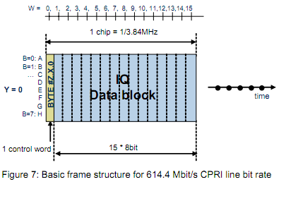
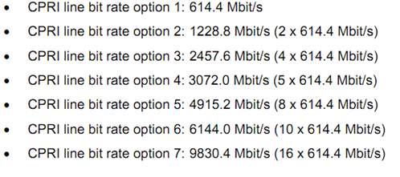

LTE CPRI 速率计算
---以下为计算结果：
每天线占用AxC数
采样率(MHz)
IQ数据位宽(bit)
小区所需CPRI位宽(bit)
小区所需净荷CPRI速率(Mbps)
小区所需CPRI速率(Mbps)
采样率=每天线占用AxC数×3.84
小区所需CPRI位宽=每天线占用AxC数×IQ数据位宽×2×天线数
小区所需CPRI速率=采样率×IQ数据位宽×2×天线数×(10/8)×(16/15)
CPRI压缩配置普通压缩，只压缩不降采样率
2：表述IQ两路数据
10/8：8B/10B线性编码效率
16/15：CPRI帧效率，一个CPRI基本帧含16个字，15个用于传输IQ数据，1个用于传输控制字
| 载波带宽 |
FFT尺寸 |
子载波带宽 |
采样率 |
| 1.4 MHz |
128 |
15 kHz |
1.92 MHz |
| 3 MHz |
256 |
3.84 MHz |
| 5 MHz |
512 |
7.68 MHz |
| 10 MHz |
1024 |
15.36 MHz |
| 15 MHz |
1536 |
23.04 MHz |
| 20 MHz |
2048 |
30.72 MHz |
CPRI基本帧

CPRI线速率规格：
